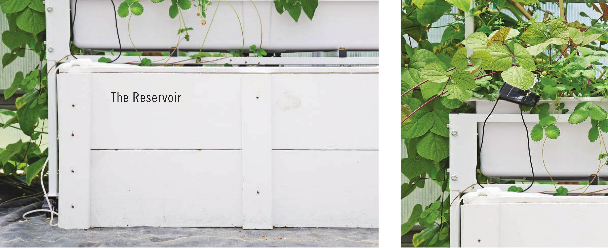

The Growing Area The growing area in a hydroponic garden can be adjusted to grow nearly any plant. By adjusting irrigation frequency, pot/tray size, substrate, and environment, hydroponic gardeners can create optimal growing conditions for any crop they desire. Some crops are more practical than others; for example, hydroponic wheat and corn are possible but they often require large areas for proper pollination, and the economic value of their yield is low and difficult to justify with a capital-intensive growing method. Most hydroponic gardeners, however, find many advantages over traditional growing methods when they devote their growing area to vegetables and flowers. The growing area design is the biggest difference between the various hydroponic growing methods covered in this book. Recirculating hydroponic systems, like those described in this book, have a growing area that drains back into the reservoir. The reuse of irrigation water in hydroponics can greatly reduce the water required to grow a crop compared to the water use required in traditional growing methods. The Crop Plants grown in hydroponic systems can grow faster and yield more. Hydroponics eliminates the need for herbicides and can reduce or eliminate the need for pesticides when combined with indoor growing methods. With reduced sprays and no dirt, hydroponic produce is often cleaner than produce grown with traditional methods. Many people know that hydroponics can reduce water use during the growing cycle, but it is less commonly known that some produce, like lettuce, often uses more water for washing than the entire water requirement to grow the crop. 14 DIY HYDROPONIC GARDENS
